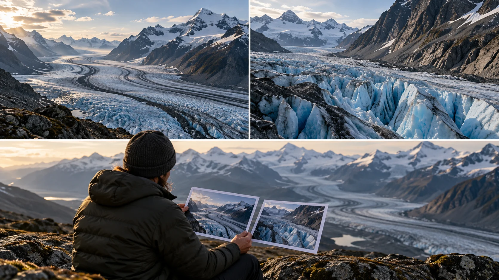

G18 · 중급 · 일반 드론
Across the Glacier: 방송 다큐멘터리의 빙하 전경
빙하 전체와 표면의 세부를 나누어 읽고 공개되지 않은 경로를 추정 사실과 구별한다.
그림에서 확인할 세 가지공개되지 않은 경로는 관찰 과제로 남긴다.
1빙하 전체
왼쪽 위의 검은 퇴적물 띠와 계곡을 따라 굽는 얼음을 본다. 넓은 구도는 빙하의 위치와 길이를 한꺼번에 이해하게 한다.
2균열의 깊이
오른쪽 위에서는 푸른 균열과 거친 얼음 표면이 커진다. 전체 규모를 잃는 대신 표면의 질감과 깊이가 더 강하게 읽힌다.
3구도 비교
아래 인물이 두 사진을 나란히 보는 부분을 본다. 전체 지형을 설명할 컷과 구조를 보여줄 컷을 같은 용도로 평가하지 않는 비교 장면이다.
촬영 설계
촬영을 이렇게 설계한다
제작 조건을 확인한다
Philip Bloom은 아이슬란드에서 방송 다큐멘터리용으로 촬영했으며 단독 운용이었다고 밝혔다. 이것으로 특정 복합 동작을 혼자 수행했다고 추정하거나 경로의 난도를 확정할 수는 없다.
교육 적용 · 두 정보를 나눈다
빙하가 계곡 전체에서 어떤 형태인지 보여줄 컷과 표면의 균열을 보여줄 컷을 구분한다. 구도의 역할을 먼저 정하면 단독 운용에서 동시에 유지해야 할 조건을 줄일 수 있다.
교육 적용 · 단순한 안을 남긴다
넓은 전경과 세부 장면을 한 번에 잇기 어렵다면 별도 컷으로 확보하는 대안을 비교한다. 공개 설명에 없는 기체 속도나 짐벌 전환을 정답처럼 채워 넣지 않는다.
The Wonder List 두 번째 시즌을 위해 아이슬란드 빙하에서 촬영한 공개 영상이다.
원본 영상Across the Glacier: 방송 다큐멘터리의 빙하 전경
1. 지형의 흐름
원본에서 얼음 띠가 향하는 방향과 계곡의 굽이를 본다. 넓은 구도가 빙하의 구조를 이해하게 하는지 판단한다.
2. 세부의 가치
균열이나 표면이 가까이 보이는 구간이 있다면 새로 얻는 정보를 찾는다. 거리 변화와 설명의 확장을 구분한다.
3. 조작의 추정 한계
영상의 부드러움과 공개된 단독 운용 정보를 구별한다. 완성 화면만으로 구체적인 조작이나 반복 촬영 횟수를 단정하지 않는다.
재생이 제한되면 원본 영상 새 창을 이용하세요.
공식 소개 · 한국어 요약
촬영 소개에서 확인한 설정과 미공개 숏 설계
작품과 설정
Philip Bloom의 Vimeo 소개는 이 영상을 아이슬란드에서 The Wonder List 시즌 2를 위해 촬영했다고 밝힌다.
단독 운용, 4K 24p, Log 설정과 후반 색보정도 적혀 있다.
미공개 설계
그러나 숏별 출발점과 종료점, 카메라 조작 순서는 공개하지 않는다.
학습안 범위
여기서 제안한 전경·균열 구분은 제작 설명의 번역이 아니라 분석을 위한 교육 적용이다.
Kling 프롬프트단문 인과 체인 · 16:9
내가 직접 만들어 본다
가까이 내려갈수록 빙하의 전체 규모는 잃고 표면 세부는 얻는다는 교환 관계를 하나의 하강으로 지시한다.
- S01넓은 계곡을 따라 거대한 빙하가 굽어 있다.
- S02영상은 하나의 연속 쇼트다.
- S03처음 10초 동안 드론은 높은 곳에서 빙하 전체를 보여 준다.
- S04계곡을 따라 굽는 얼음이 화면 끝까지 이어진다.
- S05그래서 빙하의 위치와 길이가 한눈에 읽힌다.
- S06다음 10초 동안 드론이 빙하 표면으로 천천히 내려온다.
- S07가까워지자 빙하의 전체 모양이 화면 밖으로 사라진다.
- S08그 대신 푸른 균열과 거친 얼음이 커진다.
- S09마지막 10초 동안 드론은 균열 가까이에서 속도를 줄인다.
- S10속도가 줄자 균열의 깊이가 또렷하게 드러난다.
- S11드론은 하강 하나만 하고 다른 동작은 더하지 않는다.
- S12전체 규모를 잃는 만큼 표면 질감을 얻는다.
[네거티브]
- 계곡이 아닌 평평한 얼음판만 보이는 것 금지
- 컷이 바뀌어 전경과 세부가 따로 편집되는 것 금지
- 시작부터 너무 낮아 빙하의 길이가 가려지는 것 금지
- 얼음의 굽은 흐름이 중간에 끊겨 보이는 것 금지
- 빙하의 끝과 위치가 화면 밖으로 잘려 나가는 것 금지
- 드론이 빠르게 곤두박질치거나 옆으로 흐르는 것 금지
- 하강 후에도 빙하 전체 윤곽이 계속 화면에 남는 것 금지
- 균열이 흐릿하거나 얼음이 매끈하게 표현되는 것 금지
- 드론이 균열을 지나쳐 다른 곳으로 날아가는 것 금지
- 균열의 깊이가 평평하게 보여 입체감이 없는 것 금지
- 하강 중에 회전이나 기울임이 함께 더해지는 것 금지
- 전체와 세부가 한 화면에 같은 비중으로 남는 것 금지
결과에서 볼 것
- 처음에 빙하의 위치와 길이가 한눈에 읽혔는가
- 내려올수록 전체 윤곽이 사라지고 균열이 커졌는가
- 하강 하나만으로 두 가지 정보가 모두 전달됐는가